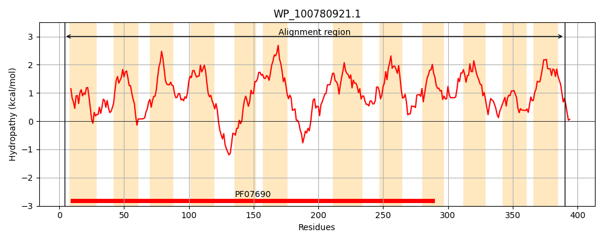
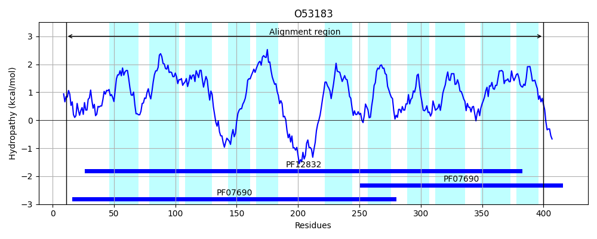
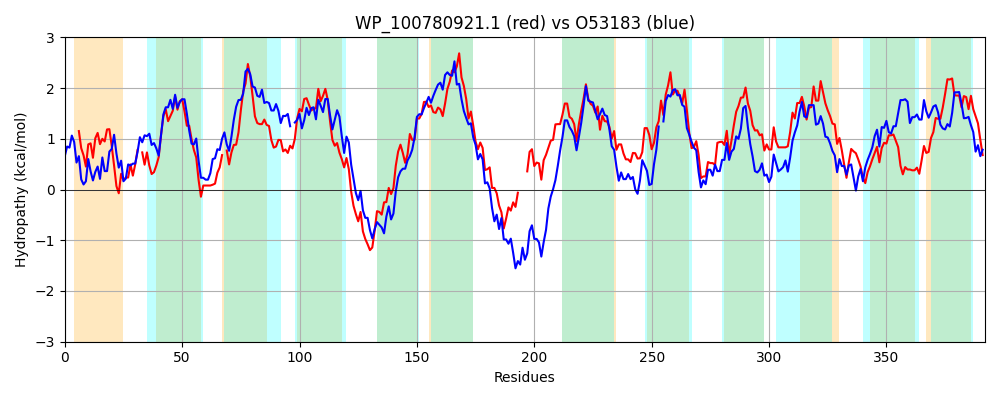

Hit Accession: O53183
Hit TCID: 2.A.1.2.71
Hit Description: gnl|BL_ORD_ID|7312 gnl|TC-DB|O53183|2.A.1.2.71 Uncharacterized MFS-type transporter Rv2456c/MT2531 OS=Mycobacterium tuberculosis GN=Rv2456c PE=3 SV=1
Mach Len: 392
e:0.000000
Query TMS Count : 12
Hit TMS Count: 11
TMS-Overlap Score: 9.900000
Predicted Substrates:None
BLAST Alignment:
Score: 554 , Bit scores: 218 bits, E-value: 7.1e-67, Alignment length: 392, Percentage identity: 35
Query: 4 RSLRALCLTSFFIADVRDGLGPFLGIFLTQRH-WLAEDIGLLMSVGGIAGLLATLPAGFITDSSRHKR-LLLAGVCLVITLTTLLLWFSQKTSVVALSQVASGICAAFVGPLIAGITLGLARQRGFSAQMGKNEAFNHAGNFFTALMAGAIAWYWGIGGIFILMACTTLLTLVALLAIRGGDIDDDAARGIEAA---STPSLPGFAILFRHTPLLIAGVTLMLFHLANAALLPMLSMRIAAAPGHLNPGLFAAATVIISQVVMIPVAIRVAGSIDKYGYWRCILLALLIMPIRAALAASSDAPAMMVPVQILDGLAAGILGVAVPSFIVSLLRGSGHVNAGQSVVMLMQGAGAAMSPALTGSIAGHYSYATAFGVLSVIAIVALMVWWRSAP 390
R RAL L +F +ADVRDGLGP+L I+L H W IG +M+VGGIA ++A P G + D + KR L++AG LV + F+ S+ L Q +GI ++ P +A ITLG + F+ ++G+NEAFNHAGN A GA+A+++G +F ++A L++++A L I +D D ARG++ A P F +L + L+I G ++ FH ANAA+LP++ +A L ++ ++ +QVVM+PVA V D +G L+ ++ R L SD +V VQ+LDG+ AGI G P + + G+GH N V G GAA+S + G I Y AF L +A +++ + P
Sbjct: 11 RVARALDLLNFSLADVRDGLGPYLSIYLLLIHDWDQASIGFVMAVGGIAAIVAQTPIGALVDRTTAKRALVVAGAVLVTAAAVAMPLFAGLYSISVL-QAVTGIASSVFAPALAAITLGAVGPQFFARRIGRNEAFNHAGNASAAGATGALAYFFGPVVVFWVLAGMALISVLATLRIPPDAVDHDLARGMDHAPGEPHPQPSRFTVLAHNRELVIFGAAVVAFHFANAAMLPLVGELLALHNRDEGTALMSSC-IVAAQVVMVPVAYVVGTRADAWGRKPIFLVGFAVLTARGFLYTLSDNSYWLVGVQLLDGIGAGIFGALFPLVVQDVTHGTGHFNISLGAVTTATGIGAALSNLVAGWIVVVAGYDAAFMSLGALAGAGFLLYLVAMP 400 | Protein Hydropathy Plots: |
|---|
|  |  |
Pairwise Alignment-Hydropathy Plot:
|
|---|
|  |